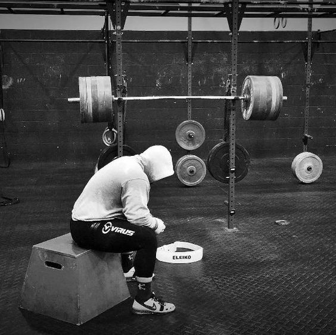

EVENTOS

Competencias de fisicoculturismo a nivel interno, donde los estudiantes pueden exhibir sus físicos y competir entre sí. Estos eventos suelen tener categorías diferentes basadas en:
Estas competencias reúnen a atletas de diferentes universidades y ciudades de una determinada región. Los participantes tienen la oportunidad de enfrentarse a competidores externos y poner a prueba sus habilidades.
Estas presentaciones permiten mostrar los resultados del entrenamiento y generar conciencia sobre el fisicoculturismo y la importancia del ejercicio y la nutrición adecuada.
La Selección de Potencia y Fisiculturismo de la Universidad Politécnica Salesiana sede Guayaquil, logró un cupo clasificatorio para participar en calidad de representantes por la provincia del Guayas al Campeonato Nacional de Potencia Senior y Máster que se realizó a finales del mes de mayo del 2015 y tuvo como escenario la ciudad de Quito.